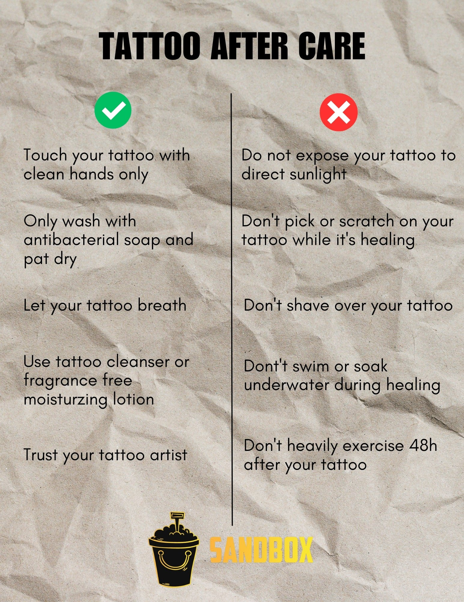
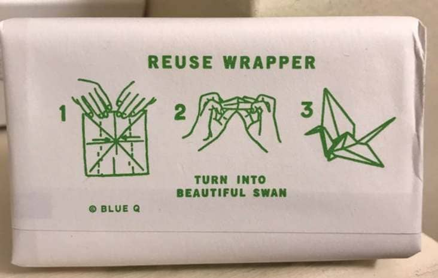
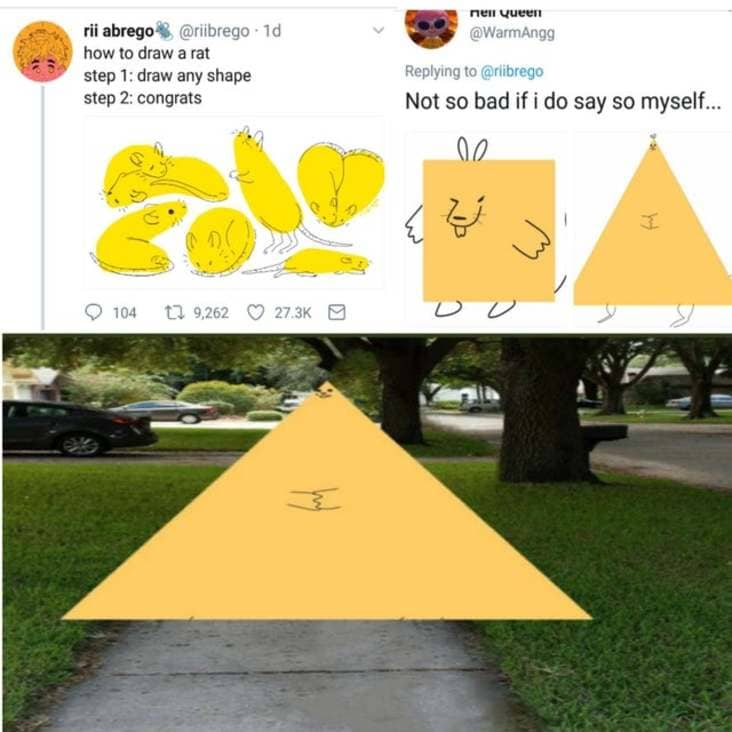

Collect a set of instructions, manuals, and/or guides for using various technologies. This might mean a setup guide for your Nest thermostat, steps for creating an account, an advice column about how to use social media, assembly instructions for Ikea furniture, etc. How do you define the terms “technology” and “instructions”? What has informed your definitions?


